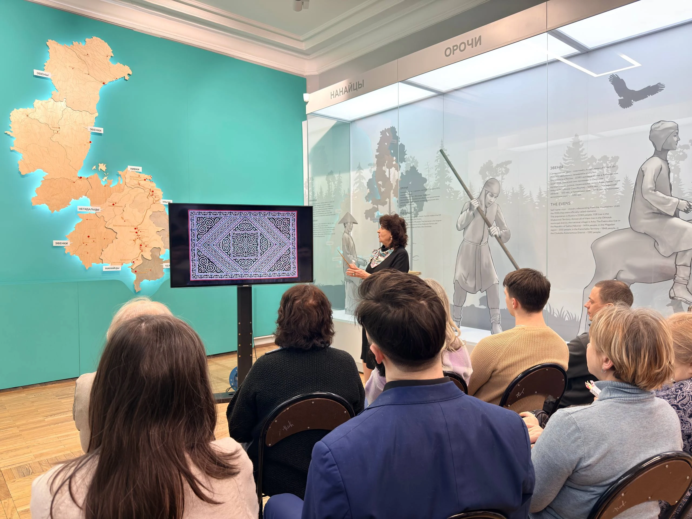
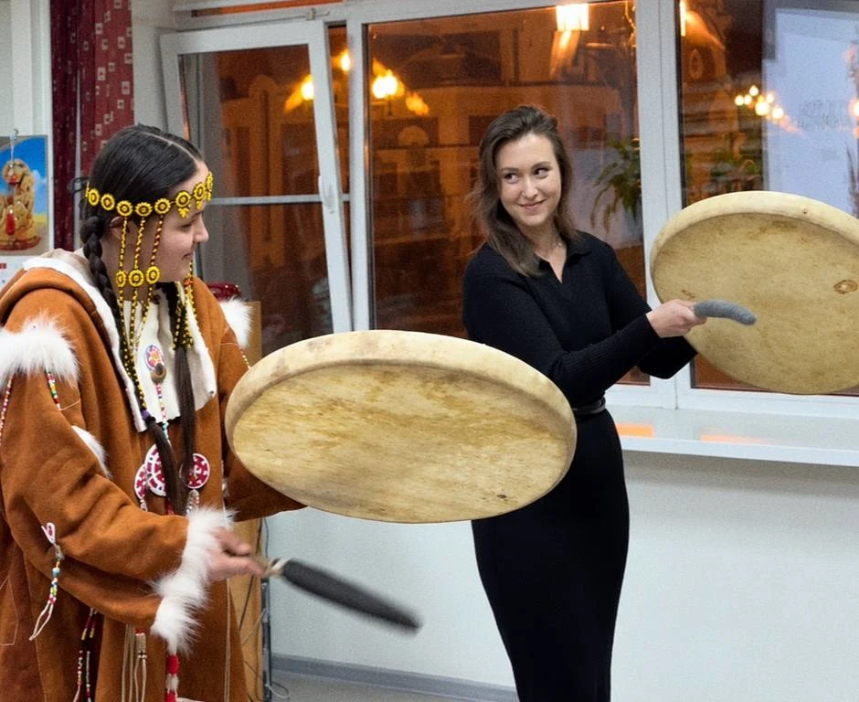
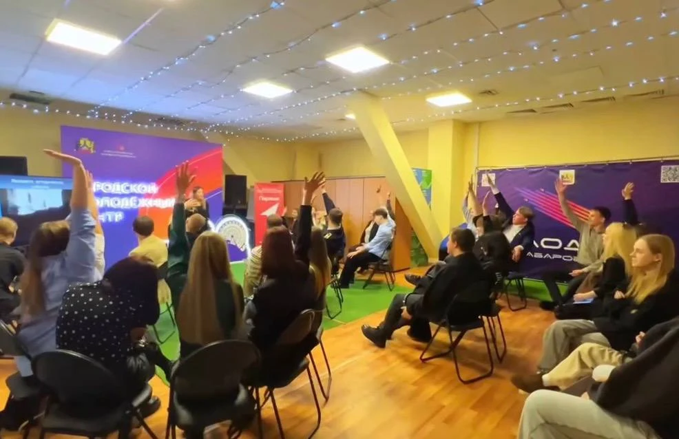
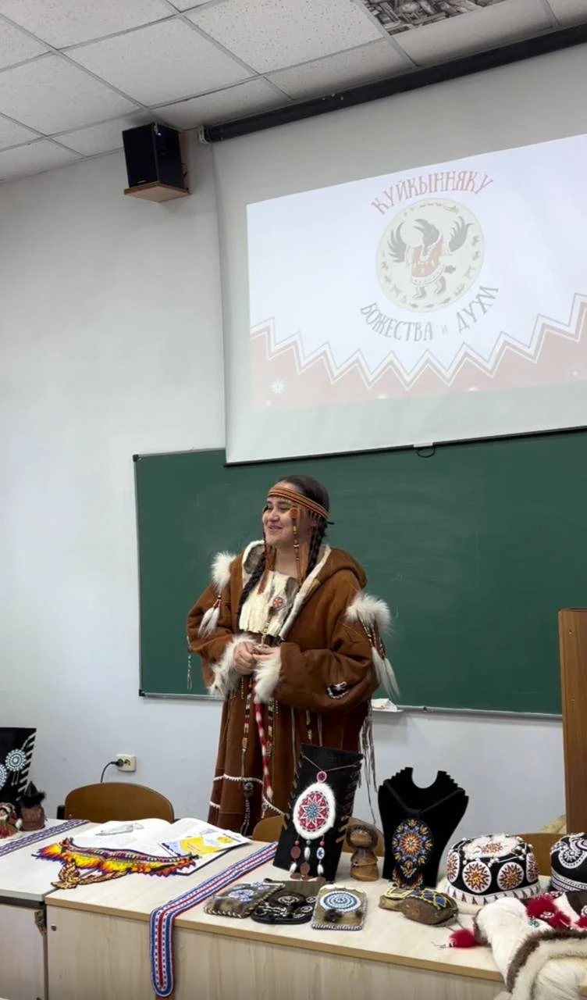

Комитет по делам молодёжи Правительства Хабаровского края
Организация и информационная поддержка
Загружаем сайт
Вход временно недоступен. Попробуйте позже.
образовательный проект
Знакомимся с коренными народами Дальнего Востока, их историей, языками и традициями. Здесь собраны рассказы о народах региона и фотографии наших встреч.
миссия
Мы хотим, чтобы о коренных народах Дальнего Востока знали больше. Поэтому устраиваем встречи, на которых можно услышать истории, рассмотреть традиционные вещи и задать вопросы тем, кто знаком с этой культурой с детства.
На наших лекциях, выставках и мастер-классах мы учимся друг у друга и знакомимся с традициями региона. А на сайте собираем материалы, к которым можно вернуться после встречи или с которых начать знакомство.
атлас
Каталог знакомит с народами Дальнего Востока через территорию, язык, традиции и современную культурную жизнь. Каждая карточка ведет на отдельную страницу с подробным материалом.
мероприятия
Слушаем истории, знакомимся с традициями и учимся друг у друга. Вспоминаем события проекта в фотографиях и деталях.

01 / Лекция в музее
Лекция об узорах на одежде и предметах быта народов Дальнего Востока.

02 / Культурный вечер
Бубны и мастер-класс по тряпичной кукле в библиотеке.

03 / Исторический квиз
Командная игра об истории и культуре в Городском молодёжном центре.

04 / Встреча в молодёжном центре
Выставка, бубны, танцы и квиз на встрече «Мозаики культур».
О встрече
В молодёжном центре «Моя территория» прошла встреча «Мозаики культур», посвящённая коренным малочисленным народам России. Среди гостей были студенты и участники разных возрастов. В программе были лекция, выставка, знакомство с бубном, танцевальные движения и квиз.
На выставочном столе можно было рассмотреть украшения, изделия и материалы о народах Дальнего Востока. После рассказа гости переходили к совместным занятиям: вставали в круг, повторяли движения и обсуждали задания.
Как это было
Видеозапись начинается с деталей выставки. Дальше гости пробуют движения в общем кругу, знакомятся с бубном и работают в небольших группах. В кадре остались разговоры, улыбки и фотографии у баннера проекта.
В конце встречи участники собрались для командных заданий. На фотографиях остались выставочный стол и гости у баннера проекта.



05 / Лекция в РГУП
Знакомство с коренными народами Дальнего Востока: рассказ, выставочные предметы и звучание бубна.

06 / Городской фестиваль · Хабаровск
Мы организовали площадку с лекторием, мастер-классами и выставкой традиционных предметов.
Раздаточные материалы
Частичка «Мозаики культур», которую можно забрать с собой.
Наклейки помогают знакомить новых людей с проектом и продолжать разговор о культуре Дальнего Востока за пределами мероприятий. На ноутбуке, в блокноте или на телефоне они становятся поводом узнать больше.
Люди, горы, олень, ворон, бубен и орнаменты - в одной коллекции.
Чёрно-белая графика, красные акценты и знак «Мозаики культур» объединяют наклейки с проектом.
Название проекта и QR-код на листе помогают заинтересоваться «Мозаикой» и сделать следующий шаг.

Вместе с проектом
Организация и информационная поддержка

Площадки, консультации и техническая помощь

Методическая и информационная поддержка